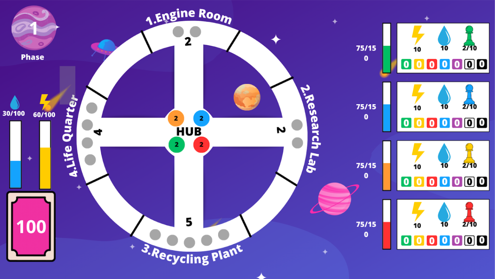

Outils Utilisés
-

Java
-

Diagramme de Gantt
-

Git
Compétences Acquises
- Répartition efficace des tâches a effectuer en fonction de leur importance
- Concevoir un diagramme d'annalyse et de conception
Objectif
Par groupe de quatre, nous avons conçu et développé un jeu de société se jouant de deux à quatre joueurs. Chaque joueur peut effectuer diverses actions en fonction de l'emplacement de leurs pions et de leurs ressources.
Jeux de plateau: Hyperstellar
